Платные услуги ГБУЗ МО "Мытищинская областная клиническая больница"
О нас
Мытищинская областная клиническая больница - одно из самых крупных лечебно-профилактических учреждений Московской области. В ее составе – 9 поликлиник, которые оснащены новейшим оборудованием, в стационарах продолжается «перезагрузка», оснащение новым современным оборудованием. Сегодня Мытищинская больница – современный лечебно-диагностический комплекс, оказывающий жителям округа высококвалифицированную и высокотехнологичную, специализированную стационарную, амбулаторно-поликлиническую и неотложную помощь.
Наши услуги
-
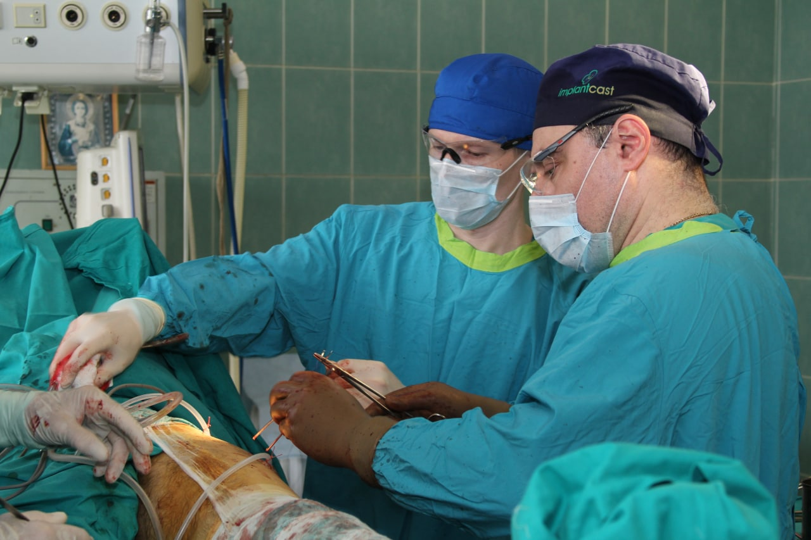 Травматология и ортопедия
Травмоцентр первого уровня Мытищинской областной клинической больницы
- Эндопротезирование коленного и тазобедренного суставов
- Коррегирующие операции на стопах
- Малоинвазивные и артоскопические операции
- Лечение застарелых, не сросшихся переломов
Прием ведет кандидат медицинских наук, заведующий травматологическим отделением, врач высшей квалификационной категории Баграт Степанович Григорян
Записаться на прием можно по телефону: +7 (495) 586-43-44
Адрес: г.о. Мытищи, Коминтерна 24 к.1
-
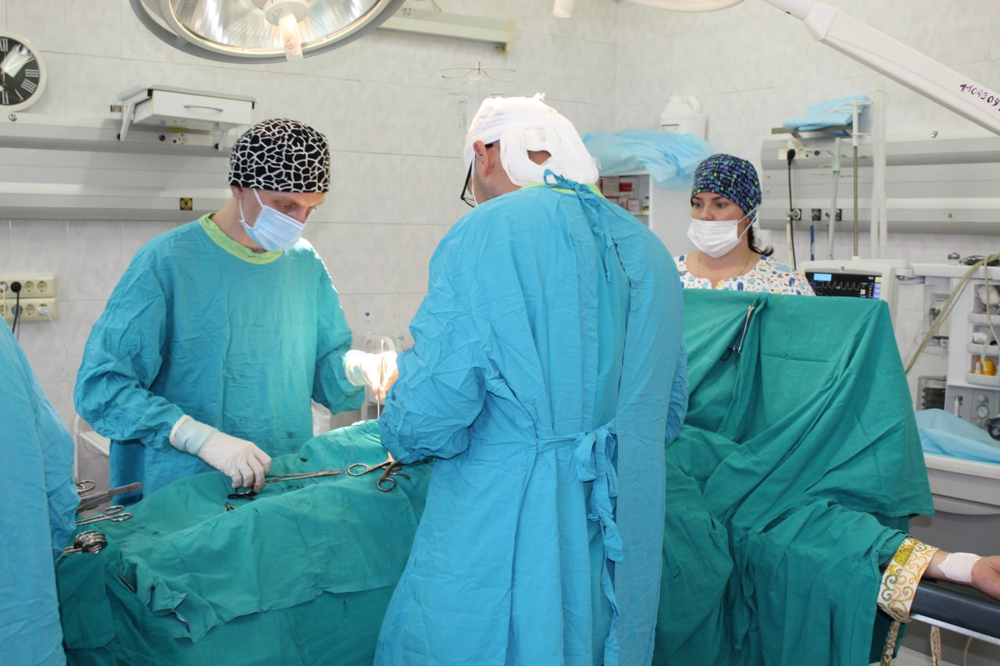 Сосудистая хирургия
Центр спасения конечностей в Мытищинской областной клинической больнице.
- Эффективные методы профилактики, диагностики, лечения и реабилитации пациентов с сердечно-сосудистыми заболеваниями
- Все виды открытой хирургической коррекции кровотока
- Флебэктомия большой и малой подкожных вен
- Минифлебэктомия, в том числе при рецидиве варикозной болезни
- Кроссэктомия
- Тромбэктомия
- Эндартерэктомия
- Все виды открытой и эндоваскулярной хирургической коррекции кровотока, в том числе гибридные операции
- Хирургия брахиоцефальных артерий:
- Каротидная эндартерэктомия (классическая, эверсионная)
- Резекция и редрессация патологических деформаций
- Стентирование сонных и подключичных артерий
- Сонно-подключичное и подключично-сонное шунтирование
- Хирургия брюшного отдела аорты и её ветвей
- Резекция аневризм аорты и подвздошных артерий
- Шунтирование и протезирование аорто-подвздошного сегмента
- Стентирование подвздошных артерий
Прием ведет врач высшей квалификационной категории, заведующий отделением сердечно-сосудистой хирургии, руководитель центра спасения конечностей - Родион Викторович Шилов.
Записаться на прием можно по телефону: +7 (495) 586-43-44
Адрес: г.о. Мытищи, Коминтерна 24 к.1
-
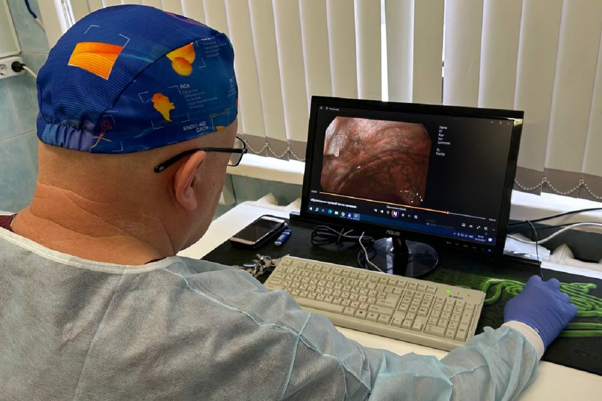 Эндоскопия
В эндоскопическом отделении проводится весь спектр диагностических исследований и оперативных вмешательств, выполняемых с помощью гибкой эндоскопии.
Спектр диагностических исследований включает в себя выполнение гастро-, колоно- и бронхоскопии.
Гастроскопия проводится с целью диагностики патологических состояний органов верхних отделов желудочно-кишечного тракта. Колоноскопия предусматривает оценку слизистой оболочки толстой кишки. Бронхоскопия позволяет визуально оценить состояние нижних дыхательных путей. Указанные исследования проводятся как в ясном сознании пациента с применением местной анестезии, так и в условиях внутривенной седации.
Прием ведет заведующий эндоскопическим отделением Станислав Олегович Шадский.
Записаться на прием можно по телефону: +7 (495) 586-43-44
Адрес: г.о. Мытищи, Коминтерна 24 к.1
-
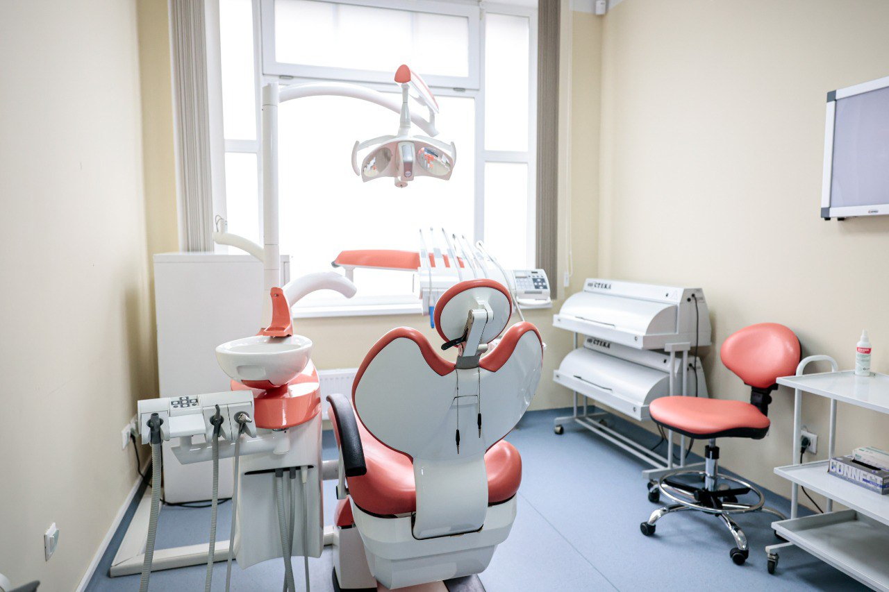 Стоматология
В стоматологических кабинетах представлен широкий спектр услуг по диагностике и лечению зубов. У нас работают квалицированные и опытные специалисты.
- Осмотр и профилактика
- Онкоскринин
- Лечение
- Удаление
В поликлинике 6 работает детский кабинет врача-стоматолога.
Узнать о стоимости стоматологических платных услуг можно:
- в поликлинике №2 (ул. Юбилейная, д. 10Б) по номеру: + 7 (495) 308–13–40
- в поликлинике №6 (ул. Ильинского 4 к.2) можно по номеру: +7(495) 308 13-32 доб.6119
-
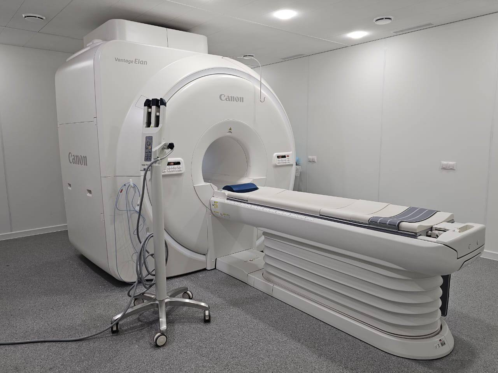 Функционально-диагностические исследования
МРТ, КТ
В Мытищинской ОКБ работают современные аппараты компьютерной и магнитно-резонансной томографии, а также возможна диагностика на цифровых маммографах, рентгенаппаратах .
Наши специалисты
-
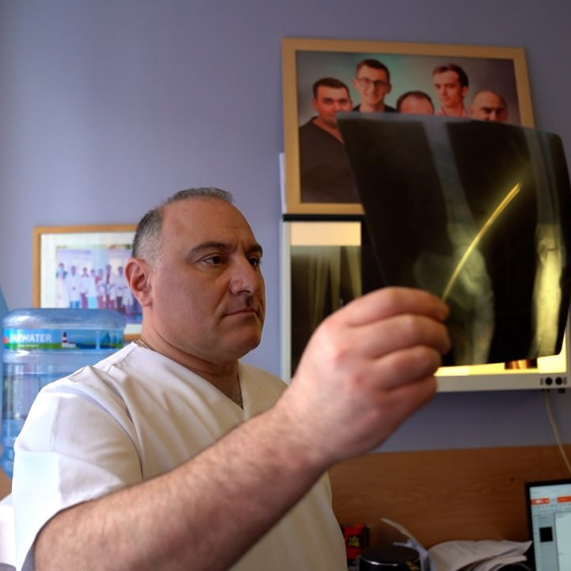
Григорян
Баграт Степанович
Заведующий травматологическим отделением
-
Шадский
Станислав Олегович
Заведующий эндоскопическим отделением
-
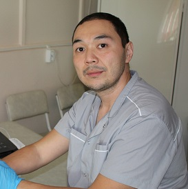
Еганов
Еган Павлович
Заведующий отделением функциональной и УЗИ-диагностики
-
Какорин
Сергей Валентинович
Заведующий отделением неотложной кардиологии
-
Лукаев
Алексей Александрович
Заведующий акушерско-физиологическим отделением с обсервационным блоком
-
Кравинская
Татьяна Анатольевна
Заведующий консультативно-диагностическим отделением родильного дома
-
Гвазава
Гига Гигаевич
Заведующий урологическим отделением
-
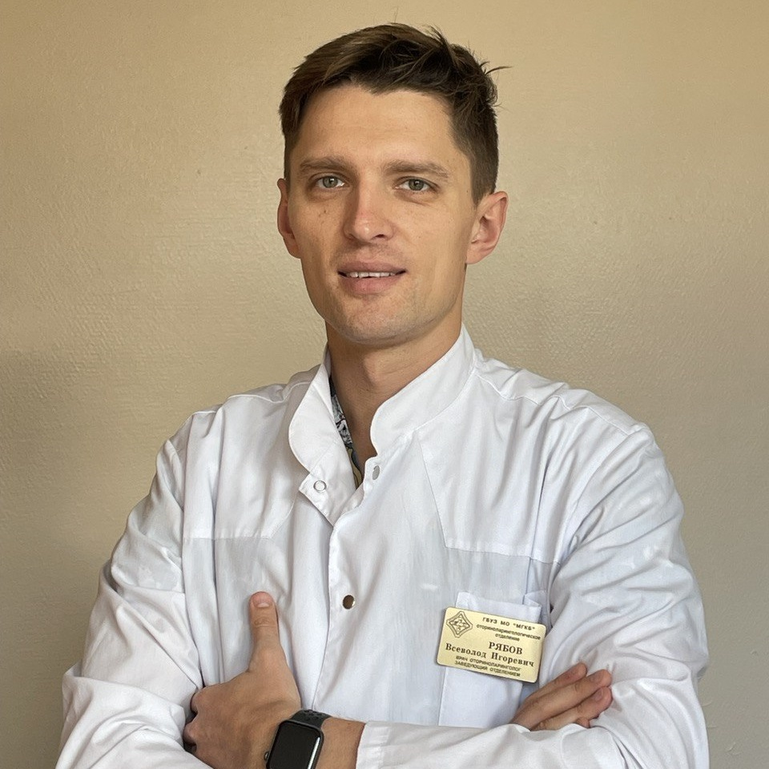
Рябов
Всеволод Игоревич
Заведующий отоларингологическим отделением
-
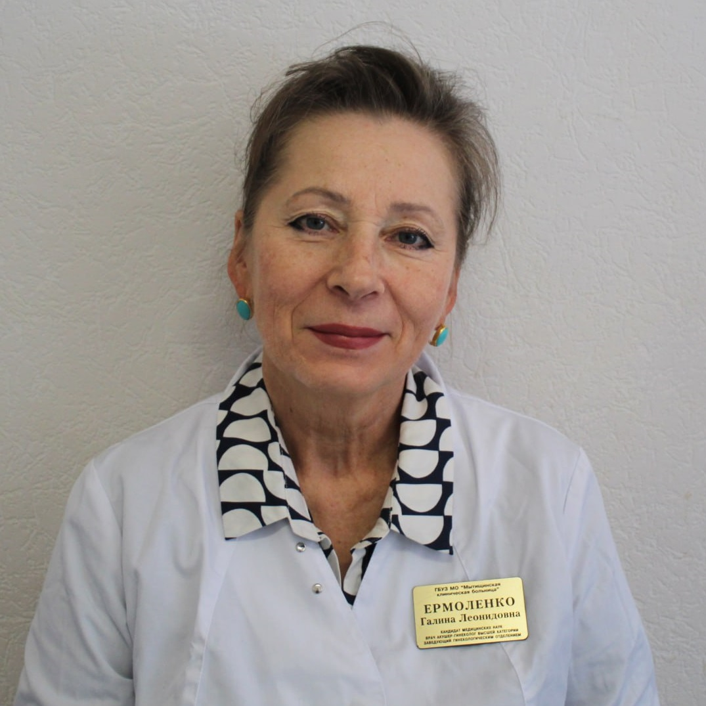
Ермоленко
Галина Леонидовна
Заведующая гинекологическим отделением
-
Модин
Игорь Викторович
Заведующий хирургическим отделением
-
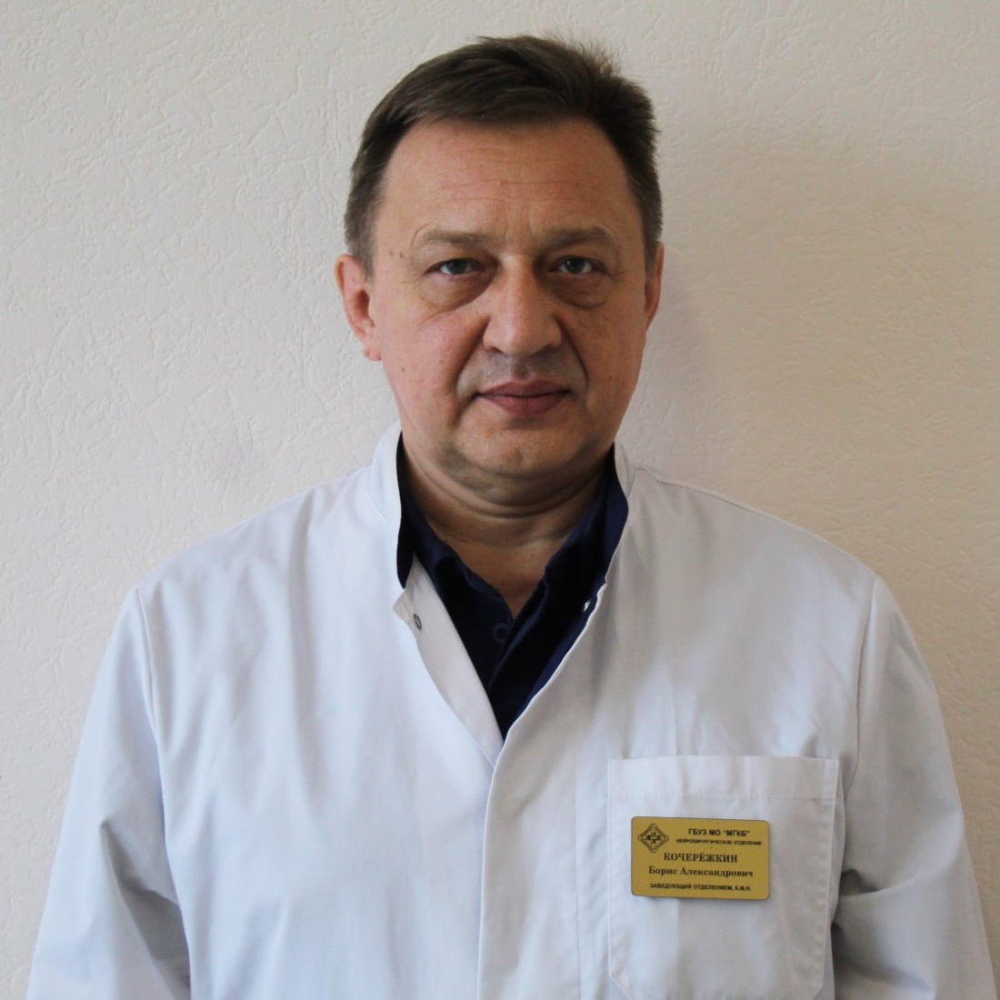
Кочережкин
Борис Александрович
Заведующий нейрохирургическим отделением
-

Поляков
Никита Сергеевич
Заведующий травматологическим пунктом
-
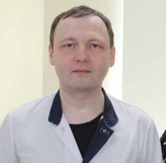
Назаров
Павел Васильевич
Заведующий офтальмологическим отделением
-
Землянухин
Максим Геннадьевич
Заведующий отделением противоопухолевой лекарственной терапии
Правовая информация
- Правила предоставления платных услуг
- Прейскурант
- Выписка из реестра лицензий
- О Программе государственных гарантий бесплатного оказания гражданам медицинской помощи на 2024 год и на плановый период 2025 и 2026 годов
- Правила внутреннего распорядка ГБУЗ МО "Мытищинская ОКБ"
- Устав ГБУЗ МО "Мытищинская ОКБ"
- Общие требования к организации посещения пациента родственниками и иными членами семьи или законными представителями пациента в ГБУЗ МО «Мытищинская ОКБ», в том числе в ее структурных подразделениях, предназначенных для проведения интенсивной терапии и реанимационных мероприятий, при оказании ему медицинской помощи в стационарных условиях
- Права и обязанности граждан в сфере охраны здоровья (N 323-ФЗ)
- Об утверждении Порядка проведения профилактического медицинского осмотра и диспансеризации
- Общие требования к организации посещения пациента родственниками
- О Порядке проведения профилактических медицинских осмотров несовершеннолетних
- О санитарно-эпидемиологическом благополучии населения